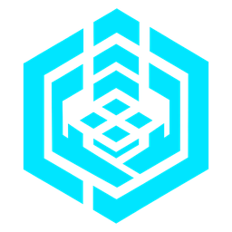
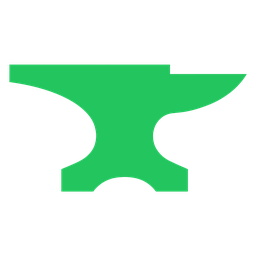
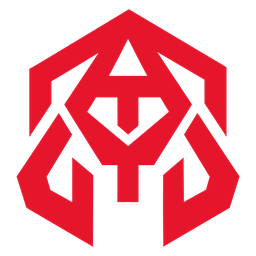

Painel geral
A Fornalha hoje
Numa fornalha, o metal derrete, se funde e é provado no fogo. Aqui as APIs do Gather viram habilidades prontas.
Linha de produção motores

Gatherentrega as APIs
Fornalhafunde e prova no fogo

Bezalelmolda a IA
IA prontaliberada para uso

O Asafe sustenta tudo: servidores, dados, energia e permissões.Fornadas em andamento aguardando Asafe
Alertas 0
O que a Fornalha não faz
Energia e infraestrutura → Asafe
Criar IAs → Bezalel
Criar APIs → Gather
Últimas habilidades fundidas
Fundição de habilidades
Fundir APIs em uma habilidade
Escolha as APIs do Gather que entram no cadinho. A Fornalha funde tudo em uma habilidade pronta e manda para a prova de fogo.
APIs do Gather 0 no cadinho
Cadinho frio · 0 °C
aguardando metal
Exemplo: Cotação + Gráfico + Alerta → "Acompanhar ação".
Habilidades fundidas
Prova de fogo
Testes sob pressão
Cada habilidade e cada IA nova passa por situações difíceis, erros e sobrecarga antes de ser liberada.
Em prova0
Aprovado0
Reprovado0
Desempenho
Velocidade, eficiência e consumo
Tudo que sai da Fornalha é medido. O que for lento ou desperdiçar recursos é reprovado.
Medições limites: velocidade p95 ≤ 1200 ms · eficiência ≥ 70% · consumo ≤ 8 chamadas por uso
Submotores · em breve
Sustentação da Fornalha
Os submotores não tiram funções da Fornalha: sustentam a diferença entre uma IA básica e um motor. Ainda não produzidos.